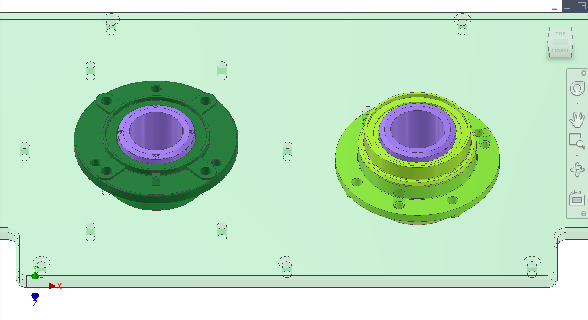
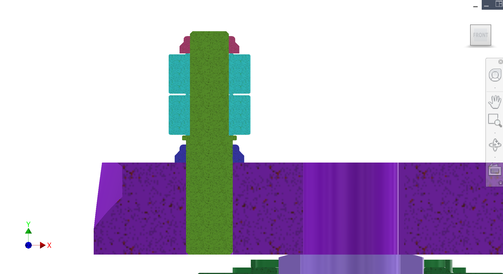
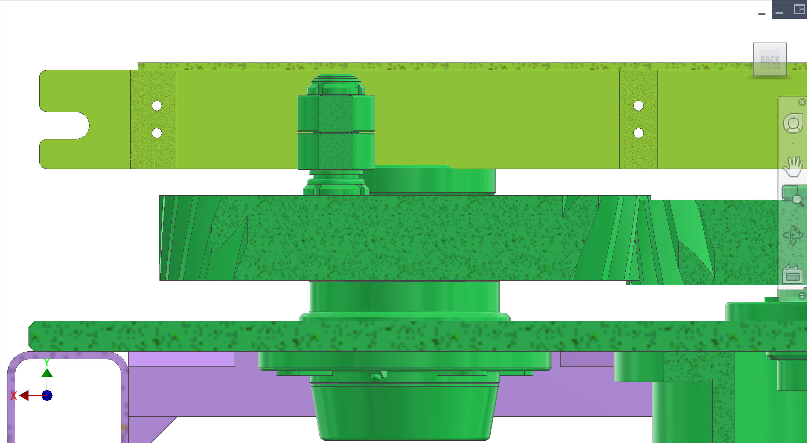
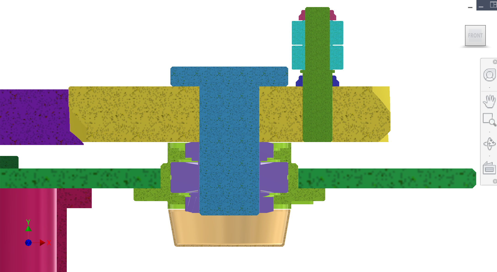
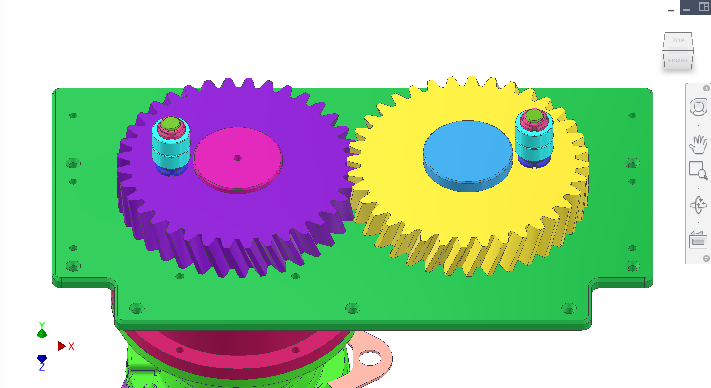

部件 of the 传动系统 section. Gear train and cam-bearing interface that converts reducer torque into reciprocating motion for the yoke.
简介
This subassembly transmits reducer output torque through a driven gear and passive gear to one or more cam bearings. The cam bearings contact the yoke to generate the reciprocating stroke used by the 传动 and extraction cycle. Gear design choices (module, spur/helical, heat treat, backlash) and shaft/bearing stiffness drive fatigue life, noise, and alignment stability.
颜色说明与部件
Key components and what contractors should validate.
颜色
部件
—
Driven gear — receives reducer output torque. Weight reduction is desired if it preserves stiffness and tooth strength.
—
Passive gear + shaft — transmits torque to the cam-bearing shaft. Stiffness and runout control yoke smoothness and bearing life.
—
Cam bearings — current concept uses a support roller / track roller bearing SKF NUTR 25 A (or equivalent) mounted on an offset radius (concept ~89 mm) and interfacing with the 传动 yoke to create reciprocation. Two rollers may be stacked to increase engagement area with the yoke.
—
Mounted bearing units — SKF F4BRP 208-SRB-CRH (locating) and F4BRP 208-SRB-CLE (non-locating) are used in the current concept; contractor to confirm suitability and propose equivalents if needed.
图示
Mounted bearing units, cam bearing cross-section, yoke roller contact, and gear pair CAD. See also 传动系统 main gallery.





图 1. Mounted bearing units.
1 / 5
建议补充图示（便于承包商理解）
补充图示: Gear tooth detail — module, face width, and mesh backlash inspection points.
补充图示: Cam post retention — threaded post vs locknut shoulder (exploded) for cyclic bending.
补充图示: Open gear lubrication — grease path or shield concept under non-sealed cover.
讨论
初步设计与意图
Operating point — Reducer output target ~70 rpm. Preliminary torque at driven gear ~1023 N·m (to validate with final reducer ratio and efficiency).
Gear design is currently unknown (contractor to own) — We are not yet set on gear module/profile, tooth form, material/heat treat, finishing, backlash, or backlash control strategy. We want the contractor to propose the complete gear set design based on our loading scenario and what can be reliably manufactured/inspected in China.
Current gear-force estimate — On the order of ~6.6 kN tangential and ~7.2 kN normal at the gear mesh (preliminary; depends on module, pitch diameter, pressure angle, and helix angle).
Driven gear concept — Spur gear, ~38 teeth, ~308 mm pitch diameter, module ~8 (final module/profile TBD), 20° normal pressure angle. Current face width concept ~56 mm (TBD).
Cam conversion — Support roller / track roller bearing (concept: SKF NUTR 25 A) on a ~25 mm cam post/shaft. Two rollers may be stacked to increase yoke engagement surface area and reduce local contact stress.
已知问题与风险
Gear geometry not finalized — Module choice (6 vs 8), spur vs helical, and contact ratio must be finalized to ensure fatigue life and acceptable noise.
Heat treatment + finishing — Tooth hardness and finishing (hob + grind/shave/roll) strongly affect wear, efficiency, and life.
Alignment sensitivity — Gear mesh and cam-bearing/yoke interface are sensitive to shaft parallelism and bearing stiffness. Misalignment increases noise and reduces life.
Cam post retention — Current concept considers a threaded hole in the gear face with a screwed-in 25 mm post/shaft (step shoulder stop vs adjustable locknut). Retention strategy must resist cyclic bending and loosening.
Lubrication uncertainty — Current concept is effectively an open gear under a non-sealed cover. Lubrication method for gear teeth and cam/yoke contact is not defined yet.
DFM 与制造（中国）
Manufacturing route — Contractor to propose gear material, heat treat, tooth finishing, achievable tolerances, and inspection plan using China-available vendors.
Backlash/contact targets — Contractor to propose backlash range and contact pattern acceptance that is robust to assembly tolerance stack.
Cam post + bearing stack — Contractor to recommend the best way to mount the cam post to the gear (threaded + shoulder, press-fit, keyed, flange, etc.) and how to retain two stacked cam bearings (spacer, locknut, threadlock, etc.) for fatigue life.
承包商问题
Propose the full gear design (module/profile/tooth form, material + heat treat, finishing, and backlash targets/range) based on our loading case set, with rationale for fatigue/wear life and manufacturability in China.
Food/sanitary guardrail: if any gear/cam hardware can be wetted by juice/splash during washdown/service, specify food-safe, smoothly finished materials and avoid exposed threads inside the juice chamber (only screw heads outside the chamber).
Validate the preliminary torque/force estimates and provide the full load case set (including stall/peak events and cyclic cam loading).
Specify backlash targets, tooth contact acceptance checks, and runout/alignment tolerances needed to protect bearings and yoke motion quality.
Propose cam-bearing/yoke interface details (material, lubrication, wear strategy) and acceptance checks to avoid binding and shock loads.
Propose a cam post retention design that is robust to cyclic bending and does not loosen (and is manufacturable/inspectable in China). Compare “fixed shoulder stop” vs “adjustable locknut” approaches.
Confirm whether stacking two NUTR 25 A rollers is appropriate for the yoke contact geometry and load (alignment tolerance, edge loading risk). If not, propose alternatives (wider roller, crowned profile, dual-row, or guided follower).
Propose a lubrication approach for the gear train and cam/yoke contact under/within any covers: grease type/application, maintenance interval, and how to prevent contamination while remaining serviceable.
接口与公差
已知接口与公差。链接指向相关子系统。
部件
接口 / 公差
相关
Reducer output → driven gear
Torque 传动; shafting/keys/splines and runout targets TBD